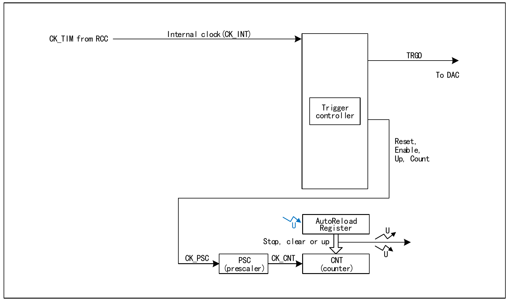

The basic timer module contains two 16-bit auto-reload timers (TIM6 and TIM7), used for counting and generating interrupts or DMA requests on update events. TIM6 and TIM7 support a 16-bit programmable prescaler. They can provide a clock for the digital-to-analog converter (DAC) to trigger the DAC synchronization circuit. The basic timers are independent of each other and do not share any resources.
The main features of the basic timer include:

As shown in Figure 16-1, the structure of the basic timer can be roughly divided into two parts: the input clock section and the core counter section. The clock of the basic timer comes from the HB bus clock (CK_INT). These input clock signals undergo various configured filtering and division operations to become the CK_PSC clock, which is output to the core counter section. In addition, these complex clock sources can also be output as TRGO to the DAC peripheral.
The core of the basic timer is a 16-bit counter (CNT). CK_PSC is divided by the prescaler (PSC) to become CK_CNT, which is finally fed to CNT. CNT supports up-counting mode and has an auto-reload register (ATRLR) that reloads the initialization value to CNT at the end of each counting cycle.
Compared with the general-purpose timer, the basic timer lacks the following functions:
The clock of the basic timer is provided by the internal clock CK_INT.
CK_PSC is input to the prescaler (PSC) for division. PSC is 16-bit, and the actual division factor is equal to the value of R16_TIMx_PSC + 1. CK_PSC becomes CK_CNT after passing through PSC. Changing the value of R16_TIM1_PSC does not take effect immediately, but is updated to PSC after an update event. Update events include UG bit clearing and reset.
When the system enters debug mode, the timer can be controlled to continue running or stop according to the DBG module settings.
| Name | Address | Description | Reset Value |
|---|---|---|---|
| R16_TIM6_CTLR1 | 0x40001000 | TIM6 control register 1 | 0x0000 |
| R16_TIM6_CTLR2 | 0x40001004 | TIM6 control register 2 | 0x0000 |
| R16_TIM6_DMAINTENR | 0x4000100C | TIM6 DMA/interrupt enable register | 0x0000 |
| R16_TIM6_INTFR | 0x40001010 | TIM6 interrupt status register | 0x0000 |
| R16_TIM6_SWEVGR | 0x40001014 | TIM6 event generation register | 0x0000 |
| R16_TIM6_CNT | 0x40001024 | TIM6 counter | 0x0000 |
| R16_TIM6_PSC | 0x40001028 | TIM6 counter clock prescaler | 0x0000 |
| R16_TIM6_ATRLR | 0x4000102C | TIM6 auto-reload register | 0xFFFF |
| Name | Address | Description | Reset Value |
|---|---|---|---|
| R16_TIM7_CTLR1 | 0x40001400 | TIM7 control register 1 | 0x0000 |
| R16_TIM7_CTLR2 | 0x40001404 | TIM7 control register 2 | 0x0000 |
| R16_TIM7_DMAINTENR | 0x4000140C | TIM7 DMA/interrupt enable register | 0x0000 |
| R16_TIM7_INTFR | 0x40001410 | TIM7 interrupt status register | 0x0000 |
| R16_TIM7_CNT | 0x40001424 | TIM7 counter | 0x0000 |
| R16_TIM7_PSC | 0x40001428 | TIM7 counter clock prescaler | 0x0000 |
| R16_TIM7_ATRLR | 0x4000142C | TIM7 auto-reload register | 0xFFFF |
Offset address: 0x00
| 15 | 14 | 13 | 12 | 11 | 10 | 9 | 8 | 7 | 6 | 5 | 4 | 3 | 2 | 1 | 0 |
|---|---|---|---|---|---|---|---|---|---|---|---|---|---|---|---|
| Reserved | ARPE | Reserved | OPM | URS | UDIS | CEN | |||||||||
| Bits | Name | Access | Description | Reset |
|---|---|---|---|---|
| [15:8] | Reserved | RO | Reserved. | 0 |
| 7 | ARPE | RW | Auto-reload preload enable bit: 1: Enable auto-reload register (ATRLR); 0: Disable auto-reload register (ATRLR). |
0 |
| [6:4] | Reserved | RO | Reserved. | 0 |
| 3 | OPM | RW | One-pulse mode. 1: The counter stops when the next update event occurs (clearing the CEN bit); 0: The counter does not stop when the next update event occurs. |
0 |
| 2 | URS | RW | Update request source. Software uses this bit to select the source of UEV events. 1: If update interrupt or DMA request is enabled, only counter overflow/underflow generates update interrupt or DMA request; 0: If update interrupt or DMA request is enabled, any of the following events generates update interrupt or DMA request. - Counter overflow/underflow - Setting the UG bit - Update generated by the slave mode controller. |
0 |
| 1 | UDIS | RW | Update disable. Software uses this bit to allow/disable the generation of UEV events. 1: Disable UEV. No update event is generated, and registers (ATRLR, PSC, CHCTLRx) keep their values. If the UG bit is set or the slave mode controller sends a hardware reset, the counter and prescaler are reinitialized. 0: Enable UEV. Update (UEV) events are generated by any of the following events: - Counter overflow/underflow - Setting the UG bit - Update generated by the slave mode controller. Buffered registers are loaded with their preload values. |
0 |
| 0 | CEN | RW | Counter enable: 1: Enable counter; 0: Disable counter. |
0 |
Offset address: 0x04
| 15 | 14 | 13 | 12 | 11 | 10 | 9 | 8 | 7 | 6 | 5 | 4 | 3 | 2 | 1 | 0 |
|---|---|---|---|---|---|---|---|---|---|---|---|---|---|---|---|
| Reserved | MMS[2:0] | Reserved | |||||||||||||
| Bits | Name | Access | Description | Reset |
|---|---|---|---|---|
| [15:7] | Reserved | RO | Reserved. | 0 |
| [6:4] | MMS[2:0] | RW | Master mode selection. These 3 bits are used to select the synchronization information (TRGO) sent to the slave timer in master mode. Possible combinations are: 000: Reset – The UG bit is used as the trigger output (TRGO). If the reset is generated by a trigger input (slave mode controller in reset mode), the signal on TRGO will have a delay relative to the actual reset; 001: Enable – The counter enable signal CNT_EN is used as the trigger output (TRGO). Sometimes multiple timers need to be started at the same time or the slave timer needs to be enabled for a period of time. The counter enable signal is generated by a logical OR of the CEN control bit and the trigger input signal in gated mode. When the counter enable signal is controlled by the trigger input, there will be a delay on TRGO, unless master/slave mode is selected (see the description of the MSM bit in the TIMx_SMCFGR register); 010: Update event is selected as the trigger output (TRGO). For example, the clock of a master timer can be used as the prescaler of a slave timer. |
0 |
| [3:0] | Reserved | RO | Reserved. | 0 |
Offset address: 0x0C
| 15 | 14 | 13 | 12 | 11 | 10 | 9 | 8 | 7 | 6 | 5 | 4 | 3 | 2 | 1 | 0 |
|---|---|---|---|---|---|---|---|---|---|---|---|---|---|---|---|
| Reserved | UDE | Reserved | UIE | ||||||||||||
| Bits | Name | Access | Description | Reset |
|---|---|---|---|---|
| [15:9] | Reserved | RO | Reserved. | 0 |
| 8 | UDE | RW | Update DMA request enable bit: 1: Enable update DMA request; 0: Disable update DMA request. |
0 |
| [7:1] | Reserved | RO | Reserved. | 0 |
| 0 | UIE | RW | Update interrupt enable bit: 1: Enable update interrupt; 0: Disable update interrupt. |
0 |
Offset address: 0x10
| 15 | 14 | 13 | 12 | 11 | 10 | 9 | 8 | 7 | 6 | 5 | 4 | 3 | 2 | 1 | 0 |
|---|---|---|---|---|---|---|---|---|---|---|---|---|---|---|---|
| Reserved | UIF | ||||||||||||||
| Bits | Name | Access | Description | Reset |
|---|---|---|---|---|
| [15:1] | Reserved | RO | Reserved. | 0 |
| 0 | UIF | RW0 | Update interrupt flag. This bit is set by hardware when an update event occurs and cleared by software. 1: Update interrupt generated; The following situations generate an update event: If UDIS=0, when the repetition counter value overflows or underflows; If URS=0, UDIS=0, when the UG bit is set, or when the core counter is reinitialized by software; 0: No update event generated. |
0 |
Offset address: 0x14
| 15 | 14 | 13 | 12 | 11 | 10 | 9 | 8 | 7 | 6 | 5 | 4 | 3 | 2 | 1 | 0 |
|---|---|---|---|---|---|---|---|---|---|---|---|---|---|---|---|
| Reserved | UG | ||||||||||||||
| Bits | Name | Access | Description | Reset |
|---|---|---|---|---|
| [15:1] | Reserved | RO | Reserved. | 0 |
| 0 | UG | WO | Update event generation bit. Generates an update event. This bit is set by software and automatically cleared by hardware. 1: Initialize the counter and generate an update event; 0: No action. |
0 |
Offset address: 0x24
| 15 | 14 | 13 | 12 | 11 | 10 | 9 | 8 | 7 | 6 | 5 | 4 | 3 | 2 | 1 | 0 |
|---|---|---|---|---|---|---|---|---|---|---|---|---|---|---|---|
| CNT[15:0] | |||||||||||||||
| Bits | Name | Access | Description | Reset |
|---|---|---|---|---|
| [15:0] | CNT[15:0] | RW | Real-time value of the timer counter. | 0 |
Offset address: 0x28
| 15 | 14 | 13 | 12 | 11 | 10 | 9 | 8 | 7 | 6 | 5 | 4 | 3 | 2 | 1 | 0 |
|---|---|---|---|---|---|---|---|---|---|---|---|---|---|---|---|
| PSC[15:0] | |||||||||||||||
| Bits | Name | Access | Description | Reset |
|---|---|---|---|---|
| [15:0] | PSC[15:0] | RW | Division factor of the timer prescaler. The counter clock frequency is equal to the prescaler input frequency / (PSC+1). | 0 |
Offset address: 0x2C
| 15 | 14 | 13 | 12 | 11 | 10 | 9 | 8 | 7 | 6 | 5 | 4 | 3 | 2 | 1 | 0 |
|---|---|---|---|---|---|---|---|---|---|---|---|---|---|---|---|
| ARR[15:0] | |||||||||||||||
| Bits | Name | Access | Description | Reset |
|---|---|---|---|---|
| [15:0] | ARR[15:0] | RW | The value of ATRLR[15:0] will be loaded into the counter. For when ATRLR takes effect and updates, refer to Section 16.2.4. When ATRLR is empty, the counter stops. | 0xFFFF |